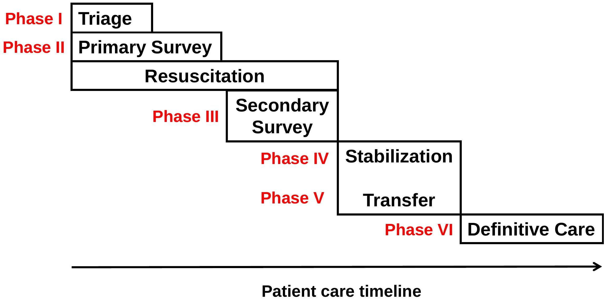

EMERGENCY & TRAUMA CARE TRAINING COURSE
Basic Trauma, Anesthesia and Surgical Skills for Frontline Health Providers
Introduction
Objectives:
This course is about managing trauma, from minor injury to humanitarian emergencies, including injuries in women, children and the elderly, with the principal goal of improving quality of care and patient safety.
- Introduction of instructors and participants
- Presentation of WHO Integrated Management for Emergency and Essential Surgical Care (IMEESC) toolkit [www.who.int/surgery]

This is a compilation of all WHO documents relevant to Emergency and Trauma Care Training Course Resources www.who.int/surgery


Additional links to WHO Resources: www.who.int.publications/en
| 1. Guidelines for Essential Trauma Care | http://www.who.int/violence_injury_prevention/services/traumacare/en/ |
| 2. Hospital Care for Children | http://www.who.int/maternal_child_adolescent/documents/9241546700/en/index.html |
| 3. Integrated Management of Adult Illnesses, District Clinician Manual: Hospital Care for Adolescents and Adults | http://www.who.int/hiv/pub/imai/imai2011/en/index.html |
| a) Quick Check and emergency treatments for adolescents and adults | http://www.who.int/influenza/patient_care/clinical/IMAI_Wall_chart.pdf |
| 4. Emergency Triage Assessment and Treatment | http://www.who.int/maternal_child_adolescent/documents/9241546875/en/ |
| 5. Guidelines on Emergency Health Care | http://www.who.int/hac/techguidance/tools/manuals/en/ |
| 6. Integrated Management of Childhood Illnesses | http://www.who.int/maternal_child_adolescent/documents/IMCI_chartbooklet/en/index.html |
| 7. Integrated Management of Pregnancy and Childbirth | http://www.who.int/maternal_child_adolescent/documents/impac/en/ |
| a) Managing Complication in Pregnancy and Childbirth: a guide for midwives and doctors | http://www.who.int/maternal_child_adolescent/documents/9241545879/en/index.html |
| b) Pregnancy, Childbirth, Postpartum and Newborn Care: a guide for essential practice | http://www.who.int/maternal_child_adolescent/documents/924159084x/en/index.html |
| 8. Oxygen Therapy for Acute Respiratory Infections in Young Children in Developing Countries | http://www.who.int/maternal_child_adolescent/documents/ari_93_28/en/ |
| 9. Mass Casualty Management Systems | www.who.int/hac/techguidance/MCM_guidelines_inside_final.pdf |
| 10. Prevention and Management of Wound infections | www.who.int/hac/techguidance/tools/guidelines_prevention_and_management_wound_infection.pdf |
| 11. Safe Surgery | http://www.who.int/patientsafety/safesurgery/en/ |
| 12. Patient Safety Pulse Oximetry Project | http://www.who.int/patientsafety/safesurgery/pulse_oximetry/en/ |
| 13. Tetanus Vaccination | http://www.who.int/immunization/topics/tetanus/en/index2.html |
| 14. Clinical Management of Rape Survivors | http://www.who.int/reproductivehealth/publications/emergencies/9789241598576/en/index.h tml |
| 15. Guidelines for Medico-legal Care for Victims of Sexual Violence | http://www.who.int/violence_injury_prevention/publications/violence/med_leg_guidelines/en/ index.html |
MODULE 1: Principles and Techniques of Trauma Care
OBJECTIVES OF MODULE 1
Learn basic techniques of triage and emergency care within the first, most critical hour, of a patient's arrival at the hospital.
Basic emergency resuscitation skills in adults and children:
- open and maintain airway
- perform life-saving procedures
- manage active bleeding
- place intravenous lines
- learn shock management
Six Phases of Trauma Care Management

Management Goals
Primary survey
- Examine, diagnose, treat life-threatening injuries as soon as they are diagnosed
- Use simplest treatment possible to stabilize patient's condition
Secondary survey
- Perform complete, thorough patient examination to ensure no other injuries are missed
Trauma Care Management

- Start resuscitation at the same time as performing primary survey
- Do not start secondary survey until completing primary survey
- Constantly reassess patient for response to treatment; if condition deteriorates, reassess ABC
- Do not start definitive treatment until secondary survey is completed unless required as life-saving measure
- When definitive treatment is not available, have a plan for safe transfer of patient to another centre
Major Trauma
Trauma mechanism:
- A fall >3 meters
- Road traffic accident: net speed >30 km/h
- Thrown from or trapped in a vehicle
- Pedestrian or cyclist hit by a car
- Unrestrained occupant of a vehicle
- Injury from high or low velocity weapon
Physical findings:
- Airway or respiratory distress
- Blood pressure <100 mmHg
- Glasgow Coma Scale <13/15
- Penetrating injury
- More than 1 area injured
Make a full primary and secondary survey of any patient who is injured, especially if major trauma